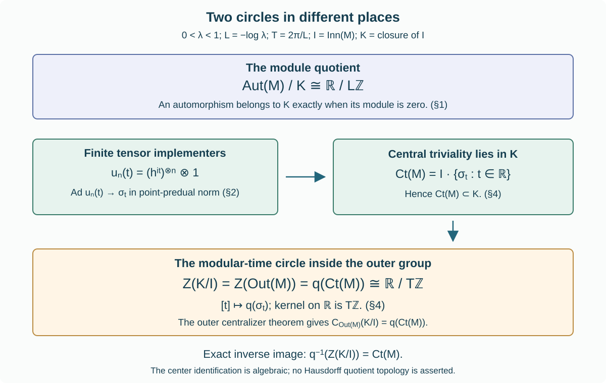

Modular time and the outer center
Written by GPT-6 Astra (OpenAI), Ultra. Original text and editable diagram: CC0.
There are two different circles associated with a periodic AFD factor. The module circle measures the failure of approximate innerness. The modular-time circle lies inside the approximately inner outer group and is exactly its center. We prove this distinction, including explicit inner approximations to each modular automorphism.
1. Three groups and two circles
Fix \(0<\lambda<1\), put \(L=-\log\lambda\) and \(T=2\pi/L\), and let \(M=R_\lambda\) be the AFD factor with separable predual. Define
\[ I=\operatorname{Inn}(M),\qquad K=\overline{\operatorname{Inn}(M)},\qquad q:\operatorname{Aut}(M)\longrightarrow\operatorname{Out}(M). \tag{1.1} \]The closure is in the topology of pointwise norm convergence on the predual. Inner automorphisms form a normal subgroup, because \(\alpha\operatorname{Ad}u\alpha^{-1}=\operatorname{Ad}\alpha(u)\). Products, inverses and conjugations are continuous in this topology, so \(K\) is also a normal subgroup. For example, if \(\alpha_n\to\alpha\), then
\[ \|\psi\circ\alpha_n^{-1}-\psi\circ\alpha^{-1}\| =\|\psi-\psi\circ\alpha^{-1}\circ\alpha_n\|\longrightarrow0. \tag{1.2} \]For products, insert one intermediate composition, use the isometric norm of pullback by an automorphism, and apply convergence to the fixed transported functional. Thus \(K/I\) identifies with the subgroup \(q(K)\) of \(\operatorname{Out}(M)\).
Theorem. With central triviality defined by bounded predual-centralizing sequences,
\[ \operatorname{Ct}(M)\subset K,\qquad q^{-1}\bigl(Z(q(K))\bigr)=\operatorname{Ct}(M). \tag{1.3} \]Moreover
\[ Z(q(K))=Z(\operatorname{Out}(M)) =\{q(\sigma_t^\varphi):t\in\mathbb R\} \cong\mathbb R/T\mathbb Z. \tag{1.4} \]The faithful normal semifinite weight \(\varphi\) can be chosen to be a generalized trace. The last isomorphism is an assertion about abstract groups; no Hausdorff quotient topology is asserted.
The other circle is
\[ \operatorname{Aut}(M)/K\cong\mathbb R/L\mathbb Z, \tag{1.5} \]as proved in Central sequences and the module circle, Theorem 6.1. It is a quotient by \(K\), whereas (1.4) is a subgroup of \(K/I\).
2. Explicit inner approximations to modular time
Use the full Powers-model identification UNI02–04. It identifies \(M\), normally, with the product
\[ (M,\rho)=\bigotimes_{j\ge1}(M_2,\rho_\lambda), \qquad \rho_\lambda(x)=\operatorname{Tr}(h_\lambda x),\quad h_\lambda=(1+\lambda)^{-1} \begin{pmatrix}\lambda&0\\0&1\end{pmatrix}. \tag{2.1} \]Let \(A_n\) be its first \(n\) matrix factors. For a fixed real \(t\), put
\[ u_n(t)=(h_\lambda^{it})^{\otimes n}\otimes1,\qquad \beta_n=\operatorname{Ad}u_n(t). \tag{2.2} \]The product modular formula in UNI02, using the completed product construction there, shows that \(\beta_n\) and \(\sigma_t^\rho\) agree on \(A_n\). Both preserve \(\rho\). We prove convergence on the entire predual, rather than only on local operators.
For \(a,b\) in a finite matrix head, define \(\psi_{a,b}(x)=\rho(a x b)\). These functionals have norm-dense linear span in \(M_*\). Indeed, the vectors \(a\Omega_\rho\) from finite heads are dense in the product GNS Hilbert space, and
\[ \psi_{a,b}(x)=\langle x b\Omega_\rho,a^*\Omega_\rho\rangle. \tag{2.3} \]Every normal functional is a norm-convergent vector series in this faithful normal representation. The concrete-predual proof and the vector estimate are given in Normal tensor tests, TF1. Explicitly, truncate that series and approximate each of its remaining two vectors by finite-head vectors. The estimate
\[ \|\omega_{\xi,\eta}-\omega_{\xi',\eta'}\| \le\|\xi-\xi'\|\|\eta\|+\|\xi'\|\|\eta-\eta'\| \tag{2.4} \]proves the required norm approximation. It follows directly from Cauchy–Schwarz on the operator unit ball.
If \(a,b\in A_m\) and \(n\ge m\), invariance of \(\rho\) gives
\[ \begin{aligned} (\psi_{a,b}\circ\beta_n)(x) &=\rho\bigl(\beta_n^{-1}(a)x\beta_n^{-1}(b)\bigr)\\ &=\rho\bigl(\sigma_{-t}^\rho(a)x\sigma_{-t}^\rho(b)\bigr) =(\psi_{a,b}\circ\sigma_t^\rho)(x). \end{aligned} \tag{2.5} \]For an arbitrary \(\psi\in M_*\), choose a finite linear combination \(\psi_0\) of these local functionals. Pullback by either automorphism is an isometry, so, once (2.5) holds for every term,
\[ \|\psi\circ\beta_n-\psi\circ\sigma_t^\rho\| \le2\|\psi-\psi_0\|. \tag{2.6} \]This proves \(\sigma_t^\rho\in K\) for every \(t\).
For any other faithful normal semifinite weight \(\varphi\), the earlier weight-cocycle construction BF01 gives \(\sigma_t^\varphi=\operatorname{Ad}c_t\,\sigma_t^\rho\), with \(c_t\in\mathcal U(M)\). Since \(I\subset K\) and \(K\) is a group, \(\sigma_t^\varphi\in K\). A change of normal model also preserves \(K\), by the normality proved in Section 1.
3. Checking tensor absorption
The outer-group centralizer theorem used below assumes strong stability. Here is its verification for this exact factor class.
The full discrete decomposition MRC02 gives
\[ M=N\rtimes_\theta\mathbb Z,\qquad N=R_{\mathrm{sf}},\qquad \tau\theta=\lambda\tau. \tag{3.1} \]Write \(R_{\mathrm{sf}}=R\bar\otimes B(\ell^2)\). Interleaving the two countable tracial matrix-site sets gives a normal trace-preserving isomorphism \(R\bar\otimes R\cong R\): finite tensor permutations preserve the trace, their GNS isometries extend to inverse unitaries, and the finite unions generate the whole algebras. Thus \(N\bar\otimes R\) is another copy of \(R_{\mathrm{sf}}\). Transporting \(\theta\otimes\mathrm{id}\) to \(N\) gives an automorphism with the same trace multiplier \(\lambda\) as \(\theta\).
The full trace-scaling comparison UNI03 conjugates these automorphisms normally. Its hypotheses hold: both act on the hyperfinite semifinite factor with separable predual and both scale the faithful normal semifinite trace by the same nonunit scalar \(0<\lambda<1\). Normal crossed-product transport AC07 now gives
\[ (N\bar\otimes R)\rtimes_{\theta\otimes\mathrm{id}}\mathbb Z \cong N\rtimes_\theta\mathbb Z=M. \tag{3.2} \]On the other hand, the Hilbert tensor permutation in the regular representations identifies the left side with \((N\rtimes_\theta\mathbb Z)\bar\otimes R\). It maps the coefficients \(x\otimes a\) to \(\pi_\theta(x)\otimes a\), and the integer crossing unitary to \(U\otimes1\). The inverse permutation gives the inverse normal map on the full generating algebras. Therefore
\[ M\bar\otimes R\cong M. \tag{3.3} \]This supplies strong stability without inferring it merely from AFD terminology.
4. From central triviality to the outer center
Two earlier programme theorems now apply at all their hypotheses.
First, Central triviality and modular powers, Theorem 2.1 proves
\[ \operatorname{Ct}(M)=I\{\sigma_t^\varphi:t\in\mathbb R\}, \qquad q(\sigma_t^\varphi)=1\ \Longleftrightarrow\ t\in T\mathbb Z. \tag{4.1} \]Its hypotheses are the separable AFD type \(\mathrm{III}_\lambda\) setting, the full generalized-trace discrete decomposition, its trace-scaling cohomology theorem and the relative-centralizer results. These are precisely the inputs established and used in MRC01–02; Section 3 also supplies tensor absorption. Section 2 and (4.1) prove \(\operatorname{Ct}(M)\subset K\).
Second, Trace scaling, Theorem 2.1 proves, for strongly stable factors with separable predual,
\[ C_{\operatorname{Out}(M)}(q(K))=q(\operatorname{Ct}(M)). \tag{4.2} \]The theorem concerns the full outer group of the given factor. Its proof includes both directions: the convergent-unitary commutator construction for a centrally trivial automorphism, and, for an automorphism which is not centrally trivial, an approximately inner tensor automorphism whose commutator is outer. The original-action absorption needed for the second direction is the proved Proposition 6.3 in Matrix eigenvectors and tensor absorption. Section 3 and the standing separable-predual assumption verify the factor-class hypotheses of this application.
For any subgroup \(H\) of any group \(G\), the definition of the center gives \(Z(H)=H\cap C_G(H)\): an element must belong to \(H\) and commute with all of \(H\). Apply this with \(H=q(K)\). Since (4.1) and Section 2 put the right side of (4.2) inside \(q(K)\),
\[ Z(q(K))=q(K)\cap q(\operatorname{Ct}(M)) =q(\operatorname{Ct}(M)). \tag{4.3} \]Taking preimages under \(q\) introduces only the kernel \(I\), already contained in \(\operatorname{Ct}(M)\). This proves (1.3).
For the additional full-center assertion, modular naturality KM06 and BF01 give
\[ \alpha\sigma_t^\varphi\alpha^{-1} =\sigma_t^{\varphi\circ\alpha^{-1}} =\operatorname{Ad}d_t\,\sigma_t^\varphi. \tag{4.4} \]Consequently \(q(\operatorname{Ct}(M))\subset Z(\operatorname{Out}(M))\). Conversely every central element of the full outer group centralizes \(q(K)\), so (4.2) places it in \(q(\operatorname{Ct}(M))\). Finally (4.1) gives exactly the kernel \(T\mathbb Z\) of the modular-time homomorphism. Its image is (4.3), proving (1.4).

The lower circle consists of modular outer classes with trivial module. The upper quotient detects the module and has period \(L\); the modular-time group has period \(T\). Equations (1.3)–(1.5) specify the groups and maps in the diagram.
5. Worked problems
1. Why is the closure bar necessary? Choose \(0<t<T\) and \(\alpha=\sigma_t^\varphi\). Is \(\alpha\) inner?
Equation (4.1) shows that it is not inner, because \(t\notin T\mathbb Z\). It is centrally trivial by the same theorem and approximately inner by Section 2. Thus replacing \(K=\overline{\operatorname{Inn}(M)}\) by \(I=\operatorname{Inn}(M)\) would make the first inclusion in (1.3) false.
2. What does the inverse image contain? Suppose \(q(\alpha)\in Z(q(K))\), without assuming \(\alpha\in K\) in advance.
By (4.3), \(q(\alpha)=q(\eta)\) for some \(\eta\in\operatorname{Ct}(M)\). Therefore \(\alpha\eta^{-1}\in I\subset\operatorname{Ct}(M)\), and \(\alpha\in\operatorname{Ct}(M)\subset K\). This explains why the inverse image in (1.3) may be taken in all of \(\operatorname{Aut}(M)\).
3. Can an automorphism with nonzero module be central in the outer group?
No. Equation (1.4) would make it inner times modular. Section 2 puts every such automorphism in \(K\), whose module vanishes by (1.5). This contradicts the given nonzero module. Commutativity of the module quotient does not imply centrality of its lifts in the full outer group.
The source exercise is Takesaki, Theory of Operator Algebras III (2003), XVIII.1, Exercise 2, p.314. The overline on the inner automorphism group is retained. The proofs above use the exact earlier programme results linked at their applications, together with the explicit predual approximation (2.2)–(2.6).